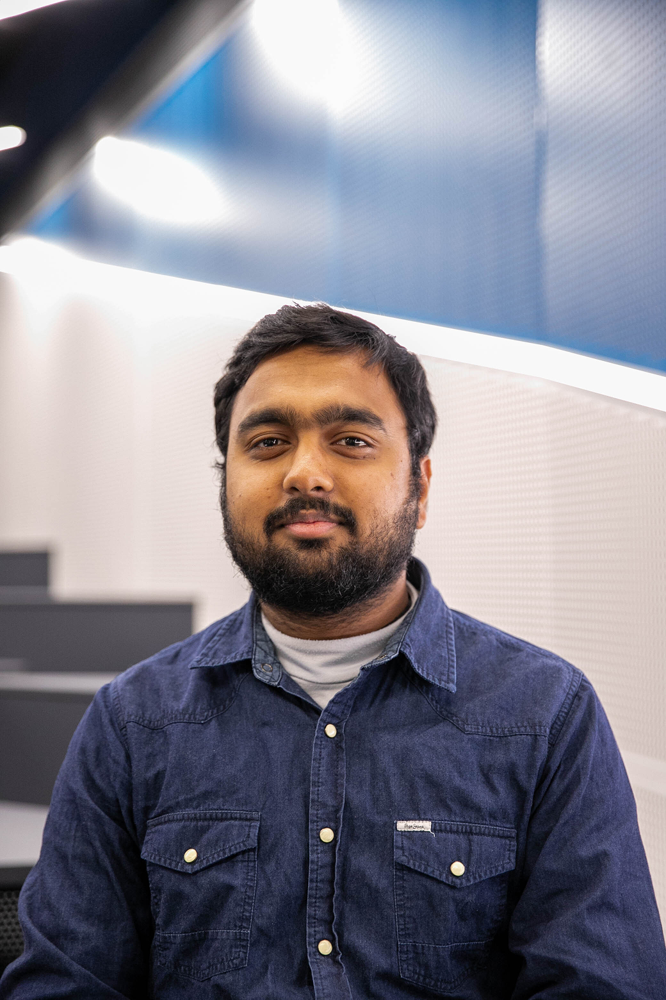

Supervisors

Prof. Matthew Bailes

Dr. Chris Flynn

Dr. Emma Carli

Bailee Wolfe

Akhil Jaini

Saurav Mishra

Rudra Sekhri
Contributors

Evie Spilias

Hendrik Combrinck

Rebecca Koehne

Ruoyao Ni

Aaron Choi

Agatha Beare

Annabelle Leung

Daniel Rosina

Evie Vale

Henry Przychodzen

Kim Yan

Lucy O'Shea

Nandini Vyas

Rhea Fernandez

Sevryn Danilov

Tristan Than
Credits
"Exploring the Solar System" Booklet Lead Editors: Rudra Sekhri and Annabelle Leung.
Planning and Organisation completed by Henryk Przychodzen, Tristan Than, Annabelle Leung, and Daniel Rosina.
Report written by Rudra Sekhri, Annabelle Leung, and Tristan Than.
Thank you to Prof. Matthew Bailes, Rudra Sekhri, Lucy O'Shea, and Dr. Kirsten Banks for running the Solar System Tour. Thank you to Daniel Rosina, Agatha Beare, Henryk Przychodzen, Nandini Vyas, and Kim Yan for piloting the OzView Presentation. Thank you to Kim Yan and Tristan Than for managing the screen and hosting the interactive activity. Thank you to all 2024 and 2025 MilliPheDe members for assisting with the creation of the booklet and running the events on the day. This project is funded by A.S.T.R.A.L..
Introduction
One of the main objectives of the A.S.T.R.A.L. Program is to create public outreach resources and events to educate the general public about astronomy. With this in mind, a booklet titled "Exploring the Solar System" was designed, with a plethora of interesting facts and activities relating to our system's planets within. The booklet is mostly targeted towards primary and high school students, as they are the optimal age range to encourage into a career in the exciting field of astrophysics.
Simultaneously, organisation work and content development for an interactive event was worked on, coined the Astrotour. This event, aimed towards children between the ages of 6-18, used the innovative new 3D Stereo touchscreen constructed by OzGrav to take participants on a guided tour around the solar system, where they could see planets and stars as if they were in space while learning more about them. After the tour, they would use their newfound knowledge to go on their own hunt for planets in the Planetary Discovery game, and receive the Booklet as a gift for attending.
The 50-minute event was run five times across 23-24 January 2025, but the goal is to continue expanding it out and turn it into a consistent event that occurs regularly.